프론트엔드
방문자 눈에 보이는 화면이에요. 가게로 치면 매장이에요.
웹사이트를 배포한 다음에 쓸 수 있는 기능(배포, 폼, 데이터베이스, 이메일 알림, 로그인, 보안)을 버셀과 네트리파이 무료 플랜 기준으로 비교해요. 가상 서비스 MovieLoop의 시사회 안내 페이지를 AI로 만들고, 네트리파이에 배포해서 신청 폼·알림 메일·로그인까지 붙여 봐요.
| 교육 목표 | 백엔드와 백엔드 플랫폼이 해 주는 일을 이해하고, 네트리파이 무료 플랜으로 배포·폼·알림·로그인을 직접 붙여 본다. |
|---|---|
| 진행 방식 | 세션 1~2는 설명과 비교표 읽기, 세션 3은 각자 실습, 세션 4는 보안 설정 읽기예요. |
| 주요 내용 | ① 프론트엔드·백엔드·백엔드 플랫폼, SSL과 SSH ② 무료 플랜 요금 구조와 상업적 사용 조건 ③ 버셀·네트리파이 기능별 비교 ④ 배포·폼·이메일 알림·로그인 실습 ⑤ 무료 기본 보안 설정 |
| 수업이 끝나면 | ① 백엔드 플랫폼이 무엇을 대신해 주는지 말한다 ② 수동 배포와 GitHub 자동 배포의 차이를 설명한다 ③ 폼 제출을 받고 알림 메일을 받는다 ④ 로그인 버튼을 붙이고 어떤 로그인 방식이 되는지 말한다 |
index.html로 저장돼요.버셀과 네트리파이를 비교하기 전에, 이 플랫폼들이 "무엇을 대신해 주는지"부터 잡아요.
방문자 눈에 보이는 화면이에요. 가게로 치면 매장이에요.
눈에 안 보이는 뒤쪽 일이에요. 로그인 확인, 데이터 저장, 이메일 발송 같은 일로, 가게의 주방·창고예요.
서버 컴퓨터를 직접 사지 않아도 주방을 빌려 쓰게 해 주는 곳이에요. 코드를 올리면(배포) 인터넷 주소가 생기고, 폼·로그인 같은 백엔드 기능도 빌려줘요.
| 구분 | 버셀 Hobby(무료) | 네트리파이 Free |
|---|---|---|
| 요금 구조 | 항목별 월 한도. 예: 데이터 전송 100GB, 함수 실행 100만 회, CPU 4시간. 넘으면 해당 기능이 30일간 멈춰요. | 월 300크레딧 안에서 모두 써요. 대역폭 1GB=20크레딧, 요청 1만 건=2크레딧. |
| 비유 | 항목별 "칸막이 용돈" | "통합 포인트 300점" |
| 팀 협업 | 팀 기능 없음(혼자 사용) | 무료 멤버 1명 |
| 상업적 사용 | 금지. 개인·비상업용만 가능해요. 결제 받기, 상품·서비스 광고, 돈을 받고 만들거나 호스팅하는 사이트, 광고 게재를 모두 상업용으로 봐요. 상업용은 Pro(1인 월 20달러, 약 2.8만 원). | 공식 요금 페이지에는 언급이 없어요. 커뮤니티 답변(2021)에 "상업용 가능, 재판매는 불가"라는 내용이 있지만 공식 확인이 필요해요. |
배포한 다음에 쓸 수 있는 기능을 하나씩 비교해요. ○는 무료로 바로 됨, △는 직접 만들거나 외부 서비스를 붙여야 함, ×는 없음이에요.
| 기능 | 버셀 Hobby | 네트리파이 Free | 쉽게 말하면 |
|---|---|---|---|
| SSL(https) | ○ 자동 발급·자동 갱신(Let's Encrypt) | ○ 커스텀 도메인 SSL 포함 | 도메인만 연결하면 자물쇠가 자동으로 붙어요. |
| SSH 접속 | × | × | 서버를 빌려주는 방식이 아니라서 없어요. |
| A/B 테스트 | △ Global Config(예전 이름 Edge Config)와 미들웨어로 직접 구현. 월 읽기 10만 회·쓰기 100회 무료 | △ 브랜치별 Split Testing이 있었지만 2026-08-26부터 새 프로젝트에는 추가할 수 없어요 | "버튼 하나로 A/B"는 둘 다 없어요. #2편에서 코드와 GA4로 해요. |
| GA(구글 애널리틱스) 연동 | ○ 사이트 코드에 GA 스크립트 삽입 | ○ 코드에 삽입하거나 Snippet injection(스크립트 자동 삽입) | 플랫폼 기능이라기보다 사이트에 GA 코드를 넣는 일이에요. |
| 자체 방문 통계 | Web Analytics 월 5만 이벤트, 1개월 보관 | 웹 분석 1일 보관 | 오래 볼 통계는 GA4가 나아요. |
| 앱 출시 | × 플랫폼 기능 없음 | × 플랫폼 기능 없음 | ① PWA: 홈 화면에 앱처럼 설치(스토어 없이 무료) ② Capacitor 등으로 감싸서 스토어 등록(등록비 별도, 웹을 감싸기만 한 앱은 애플 심사에서 반려될 수 있어요) |
| 서버리스 함수 | ○ 월 100만 회, 최대 실행 300초 | ○ Functions(크레딧 차감), 로그 24시간 보관 | API 키 숨기기, 폼 저장 같은 작은 백엔드 일을 해요. |
| 폼(문의하기) 수집 | × 내장 기능 없음(함수나 외부 서비스로 구현) | ○ Netlify Forms: 폼 태그에 data-netlify="true"를 붙이면 제출 내용이 저장되고 이메일 알림도 가능(크레딧 차감) | 비개발자가 백엔드를 가장 빨리 체험하는 방법이에요. |
| 파일 저장소 | ○ Blob | ○ Blobs | 이미지·파일을 올려 두는 창고예요. |
| 데이터베이스 | △ 내장 DB 없음. 마켓플레이스로 외부 DB(Supabase 등) 연결 | ○ Netlify Database(크레딧 차감) | 회원 정보·게시글 같은 표 형태 데이터를 저장해요. |
| 로그인·회원가입 | △ 내장 없음. Clerk, Supabase Auth, Auth.js 등 외부 서비스 연결 | ○ Netlify Identity(2026-02 폐지 계획을 철회하고 계속 지원) | 로그인은 직접 만들기보다 빌려 쓰는 게 안전해요. |
| 이메일 발송 | △ 내장 없음. Resend 등 외부 서비스(마켓플레이스 연동) | △ 관리자에게 폼 제출 알림 메일은 가능. 회원에게 보내는 메일은 외부 서비스 | "가입 환영 메일"은 둘 다 외부 서비스가 필요해요. |
| 백엔드 기능 | 버셀에서 무료로 | 네트리파이에서 무료로 | 이 교안 실습 |
|---|---|---|---|
| 배포·미리보기 | GitHub 연결 → 올리면 자동 배포, 브랜치별 미리보기 주소(하루 배포 100회) | 끌어다 놓기 배포, Git 연결 자동 배포 | 3-1 배포 |
| 서버리스 함수 | /api/hello 함수 | netlify/functions/hello 함수 | 3-2 기초 단계에서는 건너뛰어요 |
| 폼 수집 | 함수 + 외부 저장소로 구현 | Netlify Forms(속성 한 줄) | 3-3 폼 수집 |
| 데이터베이스 | 마켓플레이스 외부 DB 연결 | Netlify Database | 3-3에서 개념만 |
| 이메일 | Resend 등 연결 | 폼 제출 알림 메일 | 3-4 이메일 알림 |
| 로그인 | Clerk·Supabase 등 연결 | Netlify Identity | 3-5 로그인·회원가입 |
| 파일 저장 | Blob | Blobs | 이 교안에서는 다루지 않아요 |
가상 서비스 MovieLoop의 "특별 시사회" 안내 페이지를 AI로 만들고, 네트리파이 프로젝트 하나에 기능을 하나씩 붙여 가요.
배포는 내 컴퓨터에 있는 파일을 인터넷 주소가 있는 곳에 올려서, 누구나 볼 수 있게 하는 일이에요. 네트리파이에서는 두 가지 방법으로 배포해요.
| 방법 | 어떻게 | 언제 좋은가 |
|---|---|---|
| 수동 배포 | 파일이나 폴더를 화면에 끌어다 놓아요. | 빠르게 한 번 보여 줄 때. 고칠 때마다 다시 끌어다 놓아야 해요. |
| GitHub 연결 자동 배포 | GitHub 저장소와 프로젝트를 한 번 연결해 둬요. | 자주 고칠 때. GitHub에 올리기만 하면 네트리파이가 알아서 다시 배포해요. |
배포할 때마다 배포 기록이 하나씩 쌓여요. 기록마다 그 시점의 페이지를 볼 수 있는 고유 주소가 있어서, 고치기 전 모습도 다시 열어 볼 수 있어요.
STEP 1. AI로 첫 페이지 만들기
영화 시사회 안내 페이지를 index.html 파일 하나로 만들어 줘. 가상 서비스 이름은 MovieLoop야. 제목, 날짜, 장소만 간단히 넣어 줘.
AI가 index.html 파일 1개를 만들고, 오른쪽 미리보기에 제목·날짜·장소가 보여요. 날짜와 장소는 AI가 지어낸 가상 값이라 내 행사 정보로 바꿔 달라고 하면 돼요.
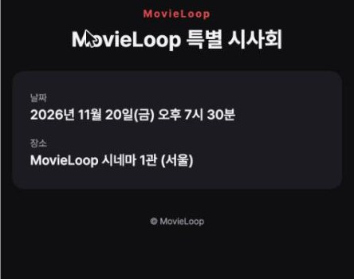
만들어진 파일을 내려받아 내 컴퓨터에 index.html로 저장해요.
STEP 2. 끌어다 놓아 수동 배포하기
index.html이 든 폴더나 HTML 파일을 끌어다 놓아요.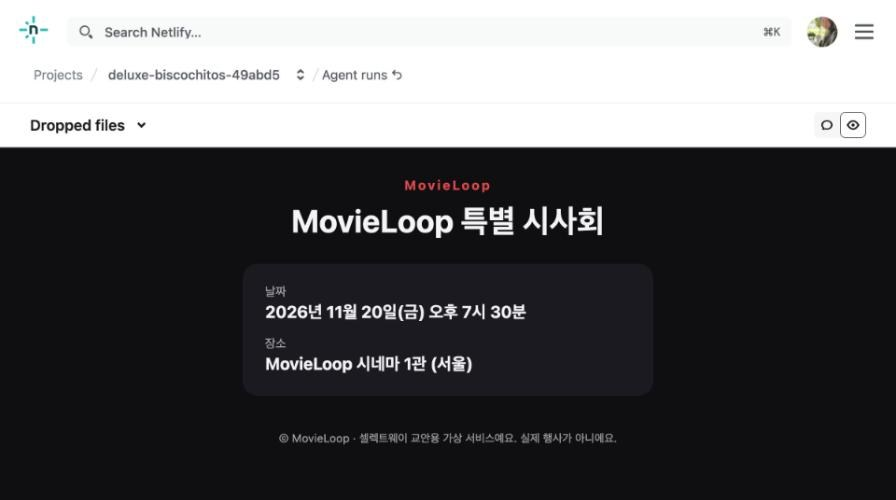
STEP 3. 같은 프로젝트에 한 번 더 배포하기
제목 아래에 '선착순 50명'이라는 문구를 추가해 줘. 고친 index.html 전체를 다시 만들어 줘.
제목 아래에 빨간 테두리의 "선착순 50명" 표시가 생긴 index.html 전체가 다시 만들어져요.
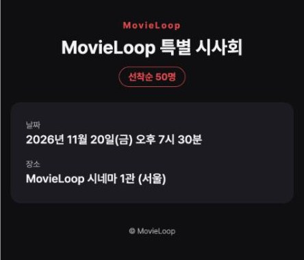
새 주소를 만들지 않고 같은 프로젝트에 올려야 주소가 그대로 유지돼요.
index.html을 끌어다 놓아요.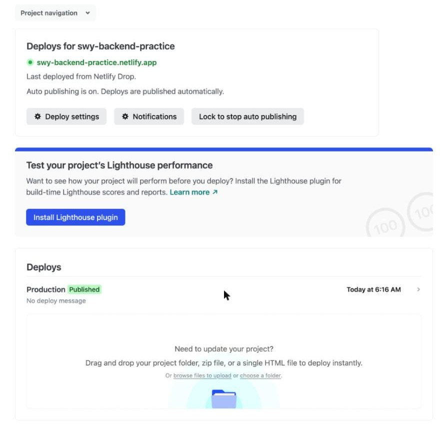
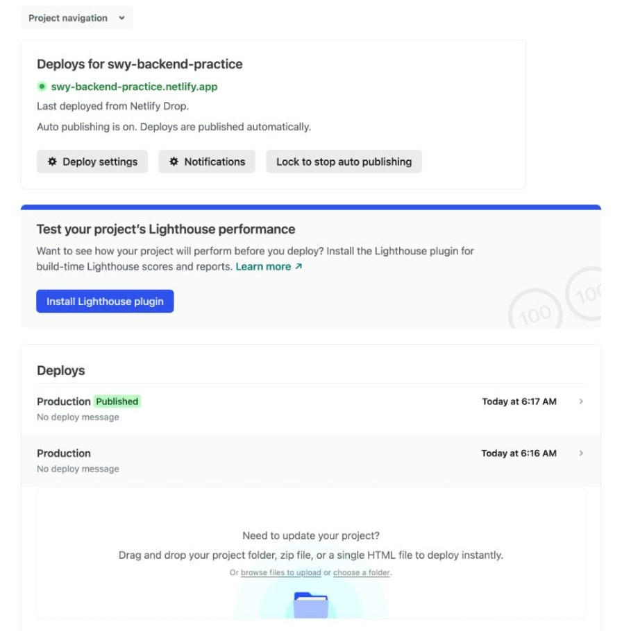
STEP 4. GitHub 저장소와 연결하기
GitHub에 저장소를 하나 만들고 index.html을 올려 둬요(GitHub 기초 교안의 파일 올리기와 같아요). 실제 업무 자료가 들어가면 비공개(Private) 저장소를 골라요.
main인지 확인하고, 나머지 칸은 비워 둔 채 배포 버튼을 눌러요.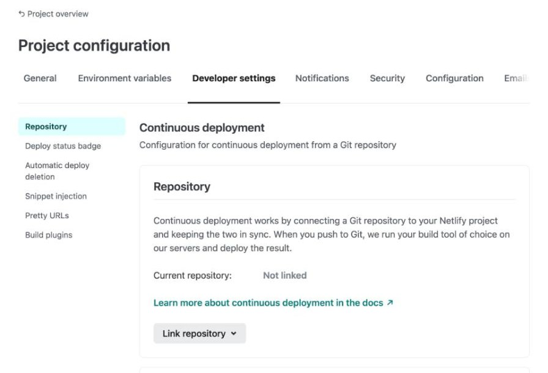
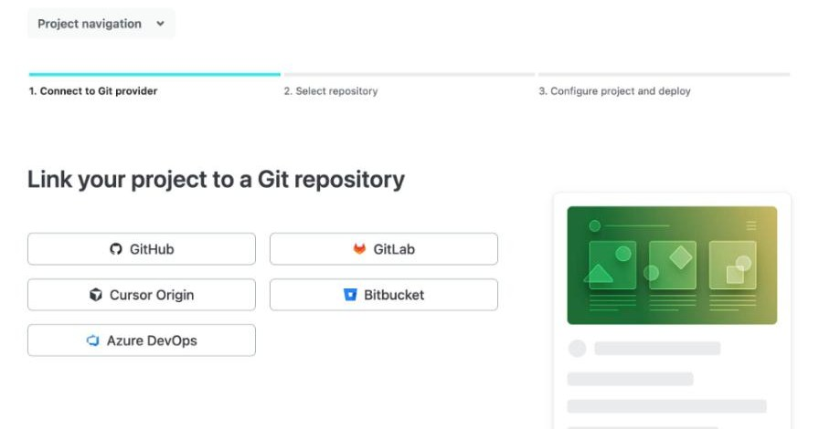
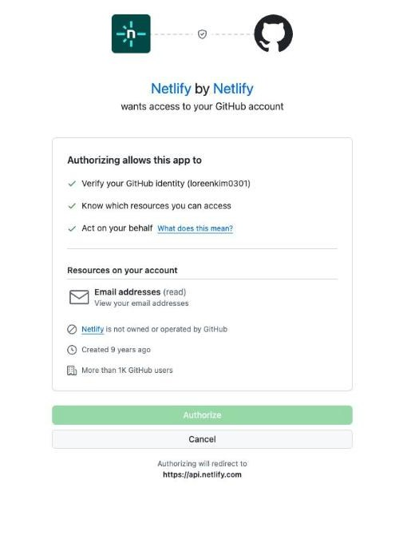
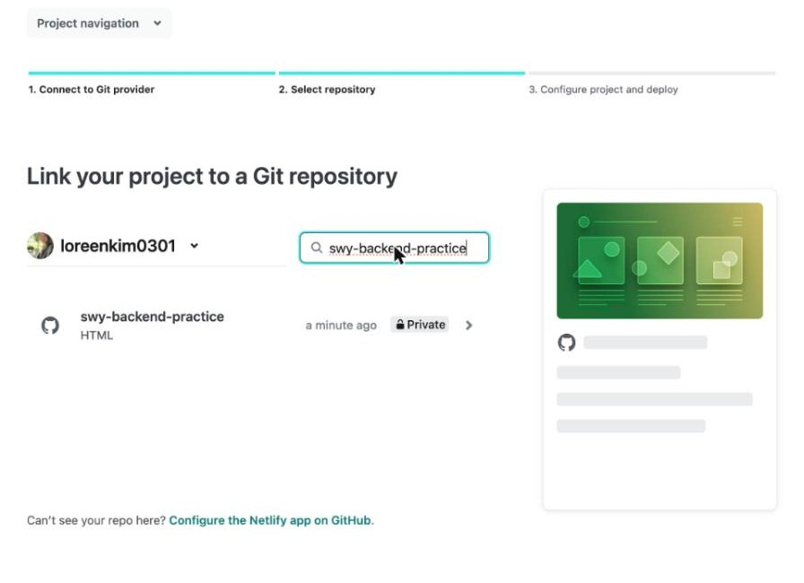
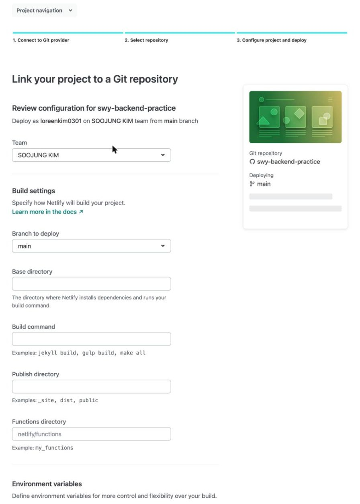
STEP 5. GitHub을 고치면 자동으로 배포되는지 확인하기
GitHub에서 index.html을 고쳐 커밋해요. 잠시 뒤 네트리파이 [Deploys] 목록 맨 위에 main@커밋번호로 새 배포가 생기면 자동 배포가 된 거예요. 끌어다 놓을 필요가 없어요.
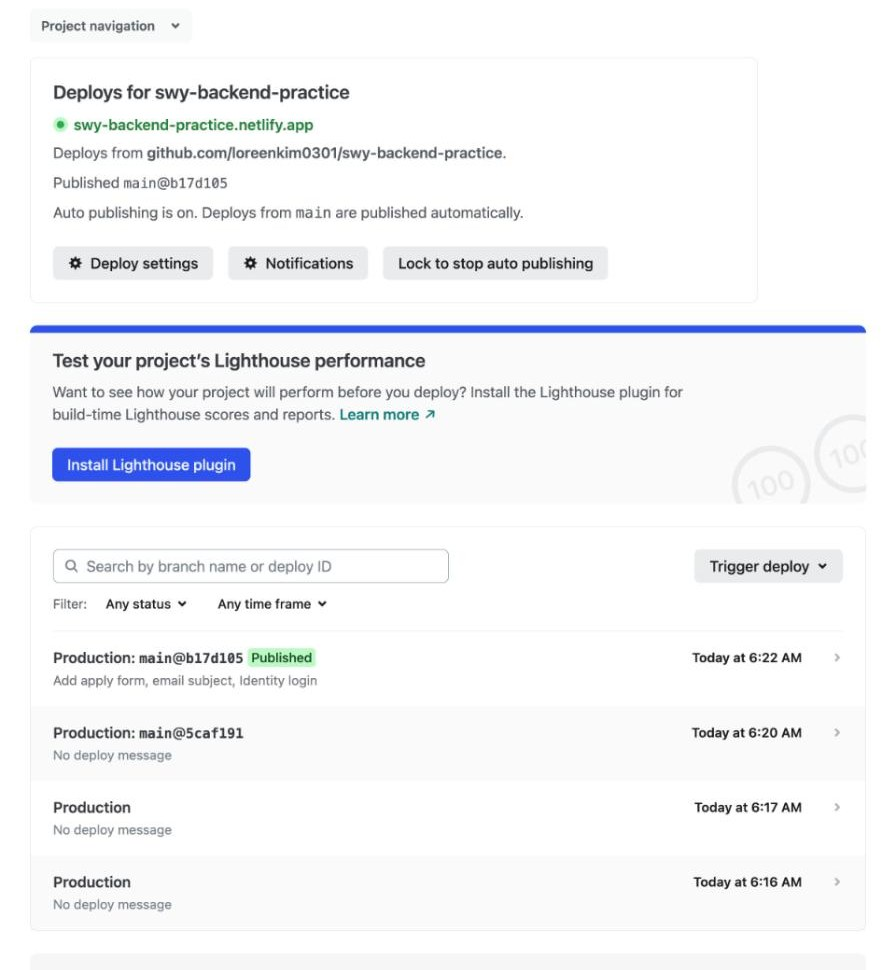
서버리스 함수는 "요청이 올 때만 서버에서 잠깐 일하는 코드"예요. API 키를 숨기거나, 폼 내용을 다른 곳에 옮겨 담을 때 써요. 코드 파일과 폴더 구조를 알아야 해서 이번 입문 단계에서는 건너뛰어요. 이 교안의 폼·알림·로그인은 함수 없이 네트리파이 화면 설정만으로 돼요.
신청 폼에 적은 내용을 받으려면, 그 내용을 담아 둘 곳(저장소)이 있어야 해요.
STEP 1. 페이지에 신청 폼 추가하기
이 페이지 아래에 시사회 신청 폼을 추가해 줘. 이름, 이메일, 남기고 싶은 말 3칸과 신청 버튼이면 돼.
날짜·장소 카드 아래에 [시사회 신청] 칸(이름, 이메일, 남기고 싶은 말)과 [신청하기] 버튼이 생겨요. 아직은 화면만 있어서 눌러도 내용이 어디에도 저장되지 않아요.
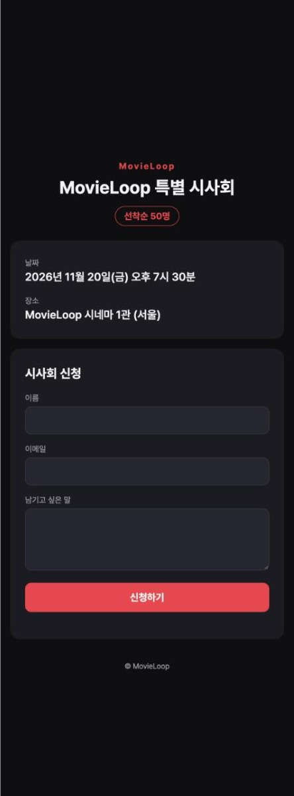
STEP 2. 폼을 Netlify Forms로 받게 하기
이 폼을 Netlify Forms로 받고 싶어. 폼에 필요한 설정을 넣어 주고, 내가 Netlify 화면에서 할 일을 순서대로 알려 줘.
AI가 폼에 넣은 설정을 표로 설명하고, 네트리파이 화면에서 할 일을 순서대로 알려줘요. 표에 나온 말은 외우지 않아도 돼요. 아래 4가지가 들어갔는지만 봐요.
name="preview-apply": 폼 이름. 네트리파이 화면에 이 이름으로 신청 목록이 생겨요.data-netlify="true": "이 폼은 네트리파이가 받아 줘"라는 표시예요.form-name: 신청이 어느 폼에서 왔는지 알려 주는 꼬리표예요.bot-field: 스팸 로봇을 거르는 함정 칸이에요.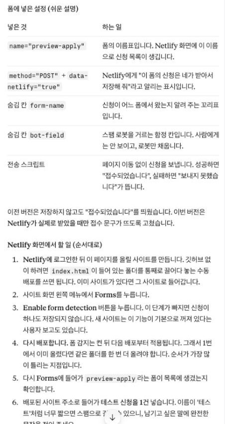
STEP 3. 네트리파이에서 폼 받기 켜기
index.html을 GitHub에 올려요. 자동 배포가 끝나면 [Forms] → [Active forms]에 preview-apply가 보여요. 폼 받기를 켜기 전에 배포한 파일은 폼을 못 찾으니, 켠 다음에 한 번 더 배포해야 해요.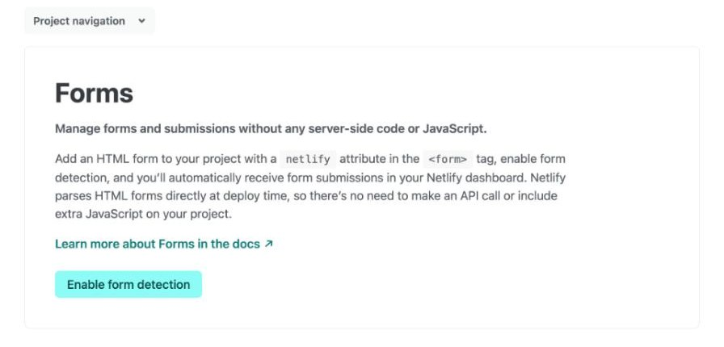
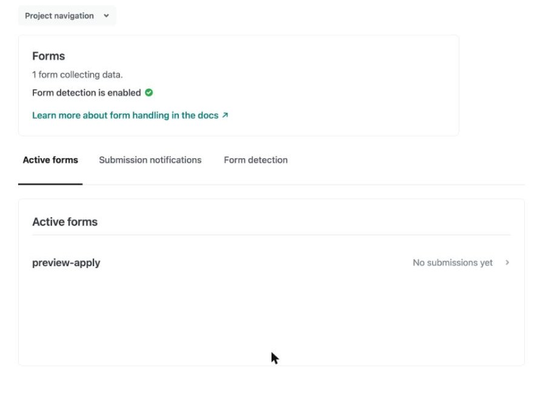
STEP 4. 테스트 신청 보내고 확인하기
배포된 주소에서 가상의 이름과 이메일(예: student@example.com)로 신청해 봐요. 진짜 개인정보는 넣지 않아요.
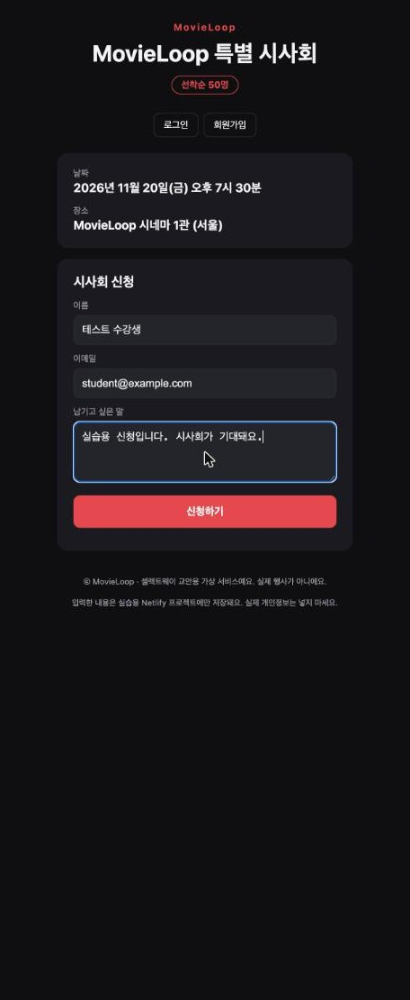
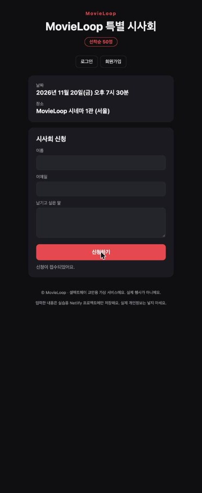
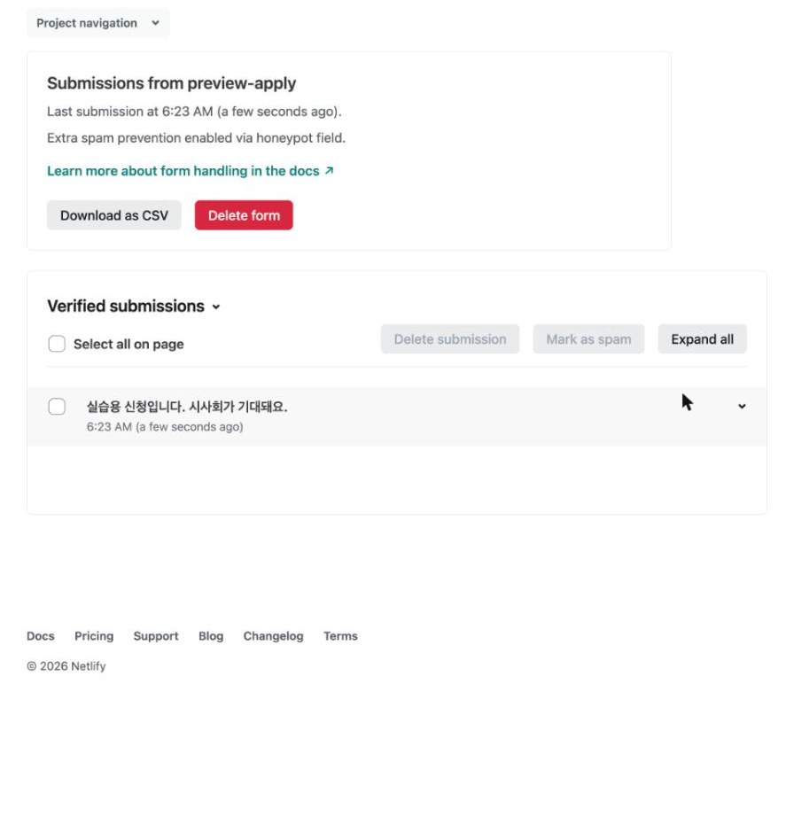
preview-apply에 신청 1건이 저장됐어요. [Download as CSV]로 엑셀에서 열 수 있어요.preview-apply가 보이는지신청이 들어올 때마다 대시보드를 열어 보긴 번거로워요. 네트리파이는 폼이 제출되면 나에게 알림 메일을 보내 줄 수 있어요. 신청자에게 보내는 메일이 아니라 관리자(나)에게 오는 메일이에요.
STEP 1. 메일 제목 정하기
폼이 제출되면 내 이메일로 알림을 받고 싶어. 메일 제목은 '[MovieLoop] 새 시사회 신청'으로 해 줘. Netlify 화면에서 할 일도 알려 줘.
AI가 폼 안에 숨김 칸 subject를 넣어 메일 제목을 정하고, 네트리파이에서 알림을 켜는 순서를 알려줘요. AI가 알려 준 메뉴 경로가 화면과 다르면 아래 STEP 2의 경로로 찾아요.
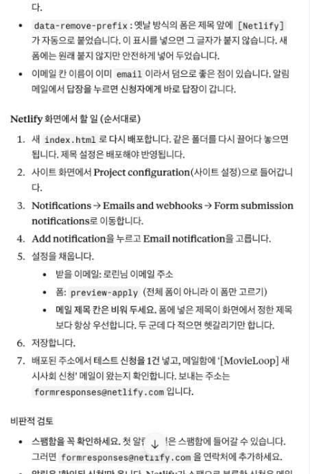
고친 파일을 GitHub에 올려 다시 배포해요.
STEP 2. 알림 메일 켜기
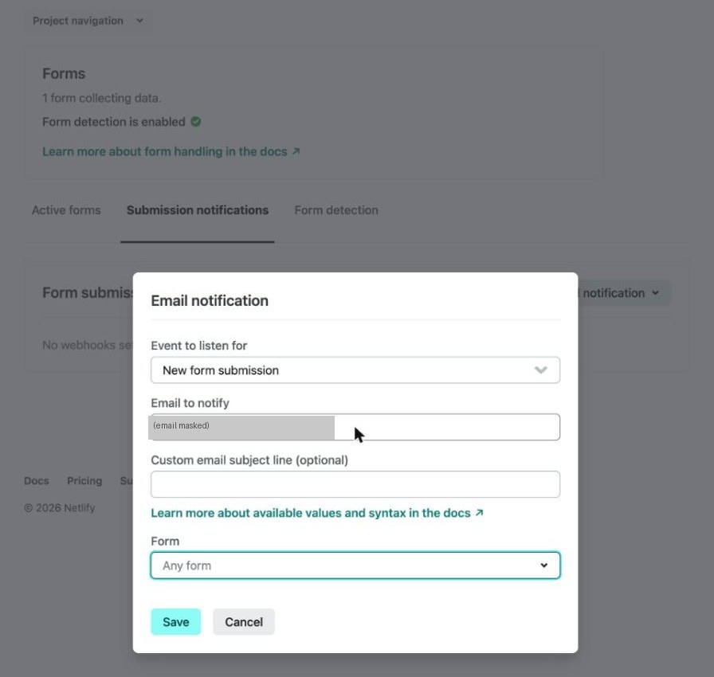
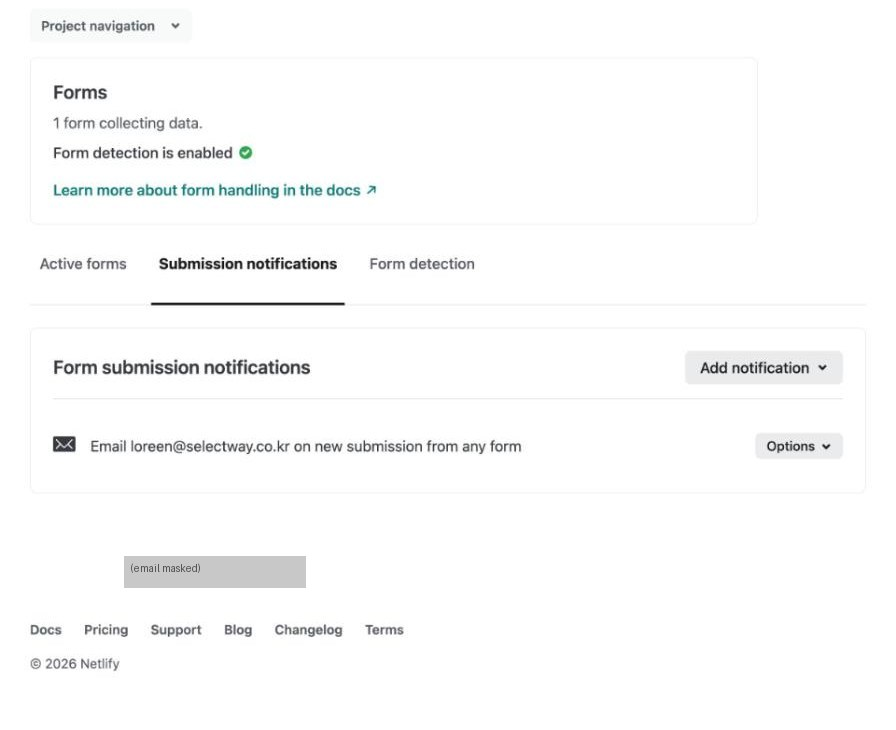
STEP 3. 신청하고 메일 받기
테스트 신청을 한 번 더 보내요. formresponses@netlify.com에서 "[MovieLoop] 새 시사회 신청" 메일이 와요. 받은편지함에 없으면 스팸함을 확인해요.
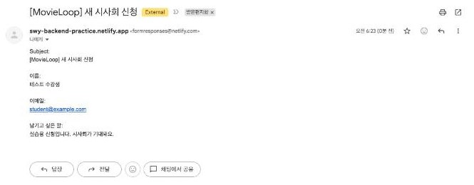
네트리파이에는 Netlify Identity라는 자체 로그인 기능이 있어요. 회원 명단과 비밀번호를 네트리파이가 대신 보관해 줘서, 로그인 화면을 직접 만들지 않아도 돼요.
| 로그인 방식 | 되나요? | 설명 |
|---|---|---|
| 이메일 회원가입·로그인 | ○ | Identity를 켜면 바로 돼요. 기본값은 가입 후 확인 메일의 링크를 눌러야 로그인돼요. |
| 구글 로그인 | ○ | [External providers]에서 Google을 추가해요. [Use default configuration]을 고르면 구글 개발자 설정 없이 돼요. 이때 구글 승인 화면에는 내 서비스 이름 대신 Netlify가 보여요. |
| 익명 로그인 | × | 공식 문서에 익명(가입 없이 임시 로그인) 방식이 없어요. 필요하면 Firebase Authentication 같은 외부 서비스를 써요. |
STEP 1. 로그인 버튼 넣기
이 페이지에 Netlify Identity로 회원가입·로그인 버튼을 넣고 싶어. 가장 쉬운 방법으로 넣어 주고, Netlify 화면에서 켜야 하는 설정도 알려 줘.
AI가 네트리파이가 만들어 둔 로그인 창(위젯)을 불러오는 코드 한 줄과 [로그인]·[회원가입] 버튼을 넣고, Identity를 켜는 순서를 알려줘요. 가입 방식은 [Open](누구나 가입)과 [Invite only](초대한 사람만) 중에 골라요.
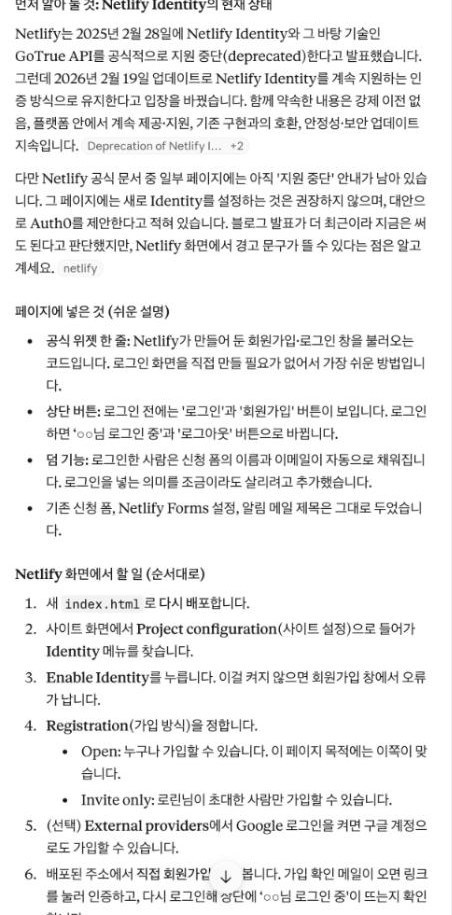
STEP 2. 로그인한 사람에게만 보이는 문구 넣기
로그인한 사람에게만 '회원 전용 좌석 안내' 문구가 보이게 해 줘. 구글 로그인과 익명 로그인도 되는지 알려 줘.
AI가 로그인하면 나타나는 "회원 전용 좌석 안내" 카드를 넣고, 구글 로그인은 되고 익명 로그인은 안 된다고 알려줘요. 답변 끝의 비판적 검토도 꼭 읽어요. 이 문구는 화면에서 숨긴 것일 뿐이라, 페이지 소스를 보면 누구나 읽을 수 있어요. 진짜 비밀 정보는 이렇게 숨기면 안 돼요.
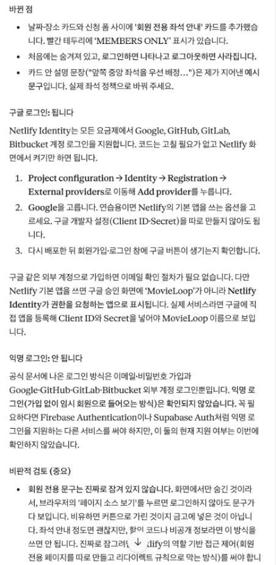
고친 파일을 GitHub에 올려 다시 배포해요.
STEP 3. 네트리파이에서 Identity 켜기
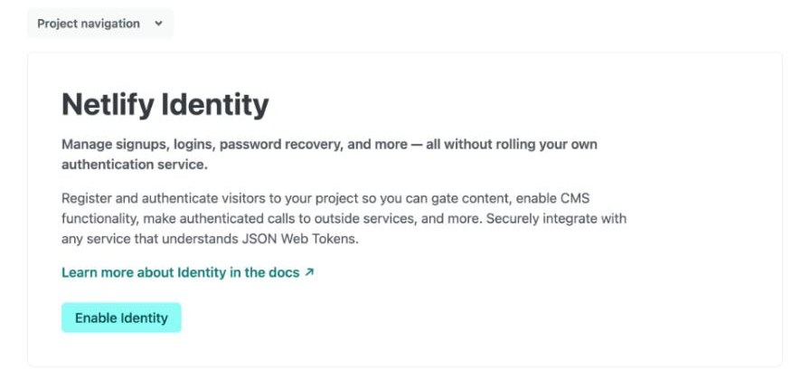
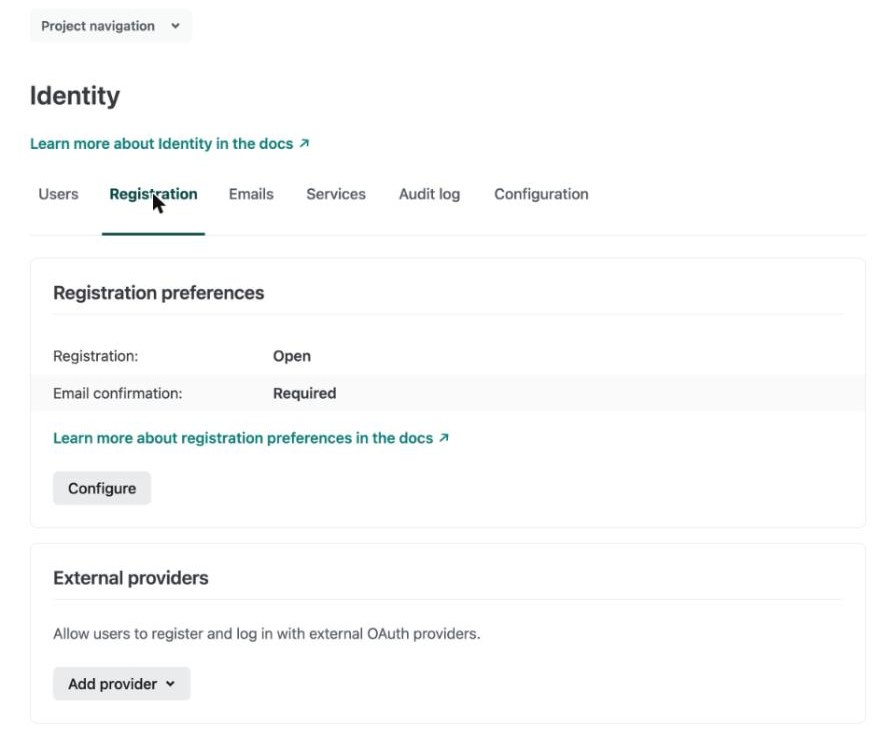
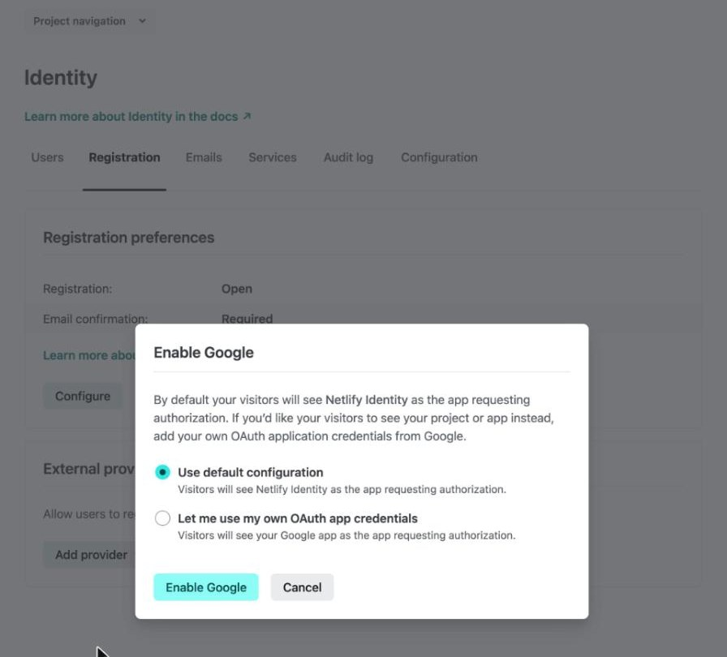
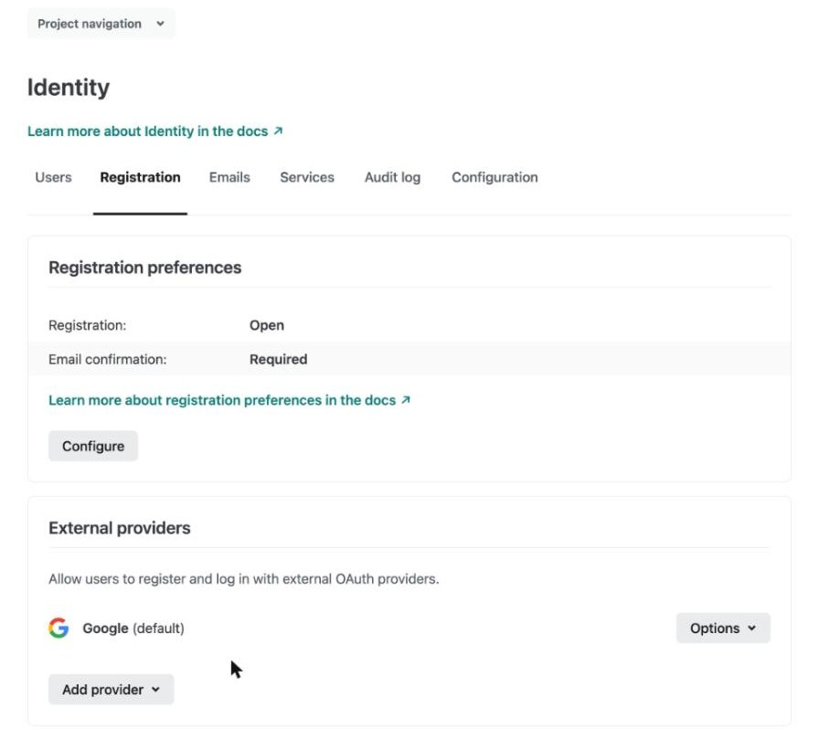
STEP 4. 직접 가입하고 로그인해 보기
배포된 페이지의 [회원가입]을 누르면 네트리파이 로그인 창이 열려요. 이메일로 가입하거나 [Continue with Google]을 눌러요.
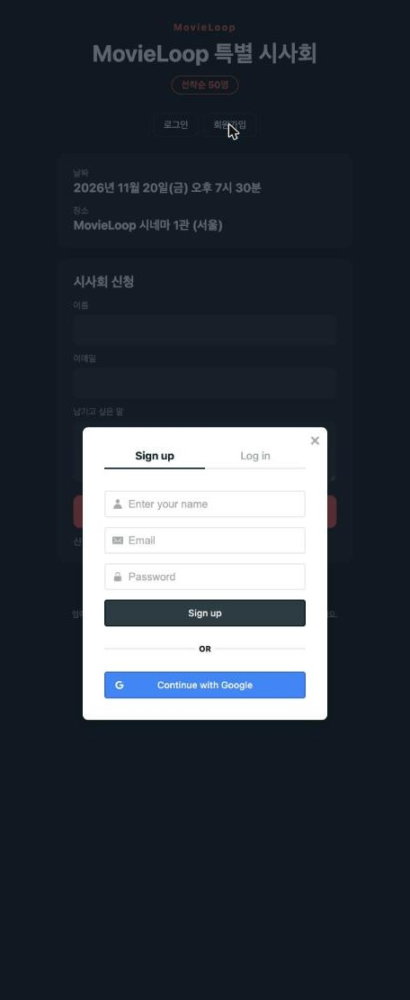
사이트에 폼과 로그인이 붙으면 보안도 같이 챙겨야 해요. 무료로 켤 수 있는 설정부터 봐요.
| 설정 | 버셀 Hobby | 네트리파이 Free | 왜 필요한가 |
|---|---|---|---|
| HTTPS 자동 적용 | ○ 자동 | ○ 자동 | 통신 내용이 새지 않게 해요. |
| DDoS(대량 접속 공격) 방어 | ○ 기본 켜짐 + Attack Mode 수동 켜기 | 요금 페이지에는 DDoS 보호가 애드온으로만 표기돼 있어요. 기본 보호 범위는 확인 필요 | 폭주 접속으로 사이트가 마비되는 걸 막아요. |
| 방화벽 규칙(IP·국가 차단) | WAF 사용자 정의 규칙 3개, IP 차단 10개. 차단된 요청은 사용량에 안 잡혀요 | Traffic Rules: 규칙 세트당 2개, 규칙당 IP 3개·국가 3개 | 예: 관리자 페이지를 해외에서 못 들어오게 막기 |
| 요청 횟수 제한(Rate Limiting) | 유료 기능. 무료 플랜 적용 여부는 공식 문서에 명확하지 않아요 | 기본 rate limiting(코드 기반 규칙) 포함 | 한 사람이 1초에 수백 번 두드리는 공격을 막아요. |
| 미리보기 주소 잠금 | Vercel Authentication(버셀 로그인한 사람만 접근). 비밀번호 보호는 Pro 유료 옵션 | 비밀번호 보호는 무료에 없어요 | 만드는 중인 페이지가 외부에 노출되지 않게 해요. |
| 폼 스팸 막기 | 내장 폼 없음 | 숨김 함정 칸(honeypot)과 자동 스팸 필터 | 3-3에서 넣은 bot-field가 이 역할이에요. |
| API 키 숨기기 | 환경 변수(Environment Variables) | 환경 변수 | 키를 코드에 직접 쓰면 누구나 가져갈 수 있어요. |
| 보안 헤더 | vercel.json의 headers 설정 | _headers 파일 또는 netlify.toml | 브라우저가 클릭재킹 같은 공격을 막도록 알려 줘요. |
더 해 볼 순서 추천
example.com 메일을 써요.폼·알림 메일·로그인이 내장돼 있어서, 외부 서비스에 가입하지 않고도 "폼 → 저장 → 알림 → 로그인" 흐름을 보여줄 수 있어요.
Next.js 프로젝트 배포의 표준이에요. 로그인·DB·이메일은 외부 서비스를 붙이는 구조라는 점을 알고 써요.
버셀 무료는 상업용 금지예요. 네트리파이 무료는 상업 허용 여부를 공식 문서로 다시 확인하고 써요.
실습 결과물
공식 문서